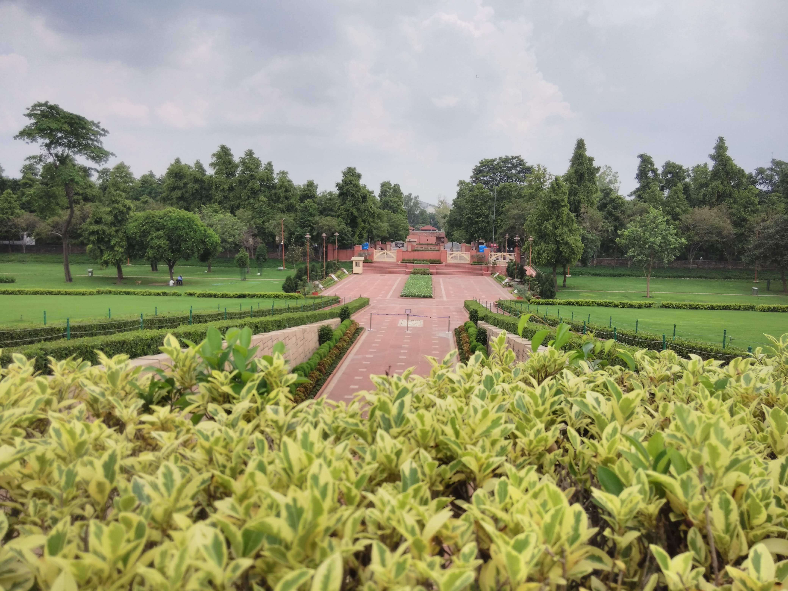
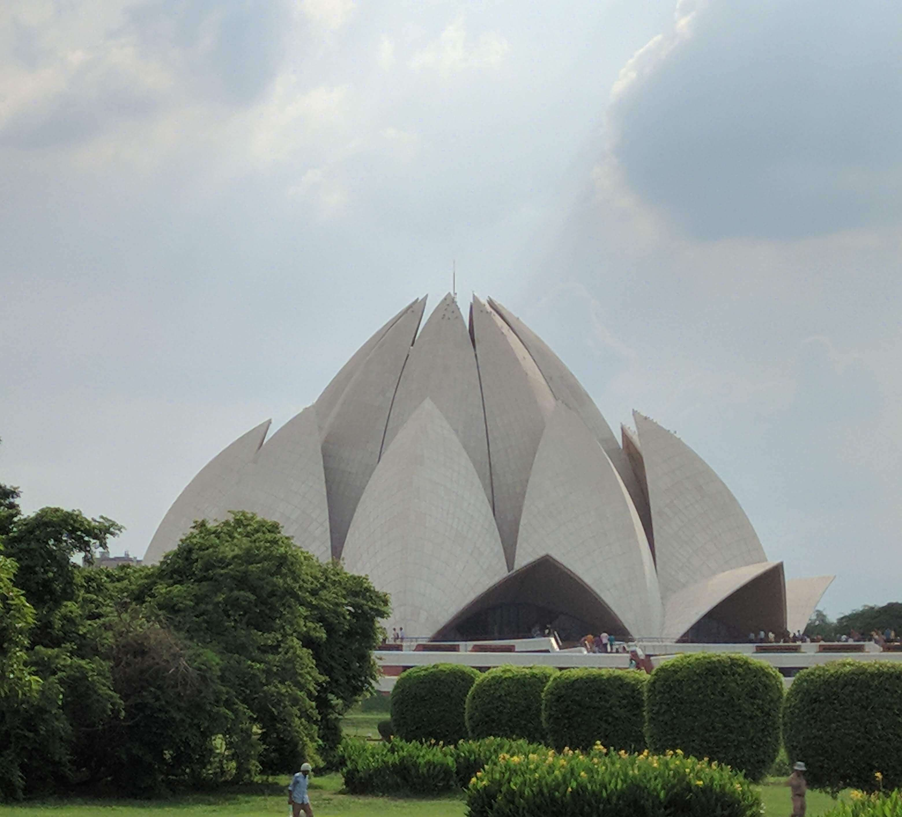
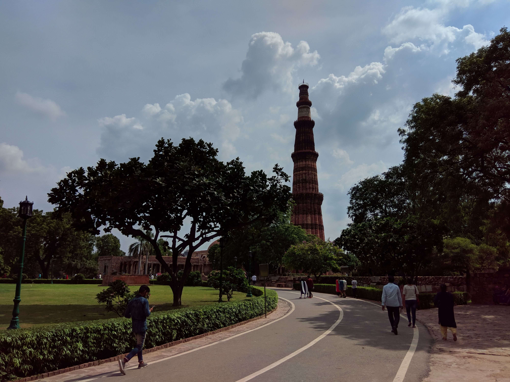
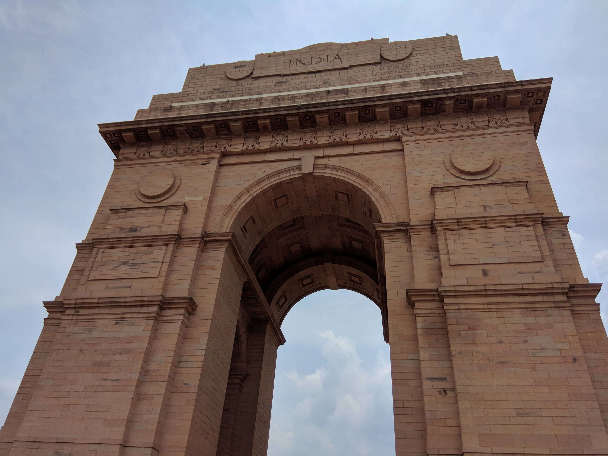
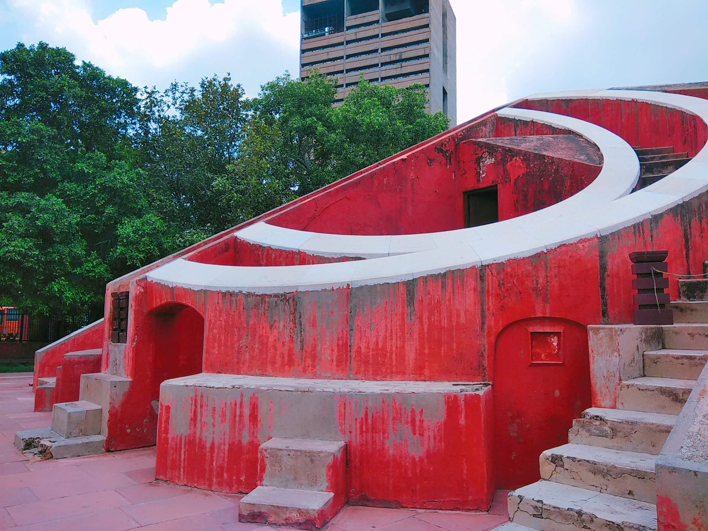

Posted by: Shrinjoy Saha
table of content
A Little Background
Delhi is the capital of the world's largest democracy with a strong historical background. It was ruled by many powerful emperors.
The town was known as Indraprastha where Pandavas used to live. From Hindu Kings to Muslim Sultans, the reins of the city continued moving starting with one ruler then onto the next. The city came under British rule in the year 1803. In 1911, the British moved their capital from Calcutta to Delhi. After independence in 1947, New Delhi became the capital of India.
Best time to visit Delhi
How to reach Delhi
- New Delhi Railway Station (NDLS)
- Old Delhi Railway Station (DLI)
- Hazrat Nizamuddin Railway Station (NZM)
- Anand Vihar Railway Terminal (ANVT)
There is a pre-paid taxi booth outside the railway station traveler can take a taxi from here and explore the city.
Delhi metro is well connected to the New Delhi Railway Station. It's a very convenient way to get into the city.
- Maharana Pratap Inter State Bus Terminus(ISBT), Kashmiri Gate.
- Veer Hakikat Rai Inter State Bus Terminus, Sarai Kale Khan.
- Swami Vivekanand Inter State Bus Terminus, Anand Vihar.
Day by day plan
Day 1 | Starting Point Delhi

Raj Ghat
Day 2 | Exploring Delhi
Remember they have a very strict security checking. Electronics items are not allowed inside the temple premises (Mobile phones are not allowed).

Lotus Temple

Qutab Minar
Day 3 | Exploring Delhi

India Gate
Day 4 | Exploring Delhi

Jantar Mantar
Red Fort
Where to stay in Delhi
Hotels are easily available in Delhi.